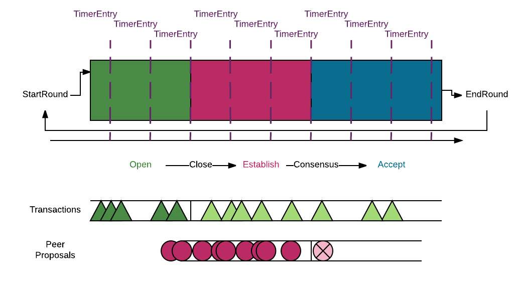
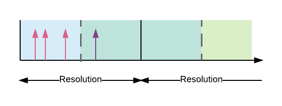
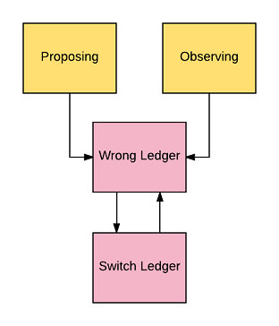
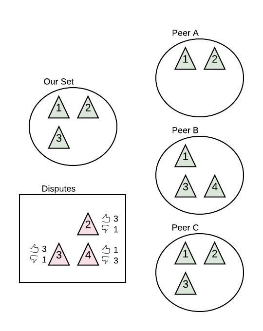
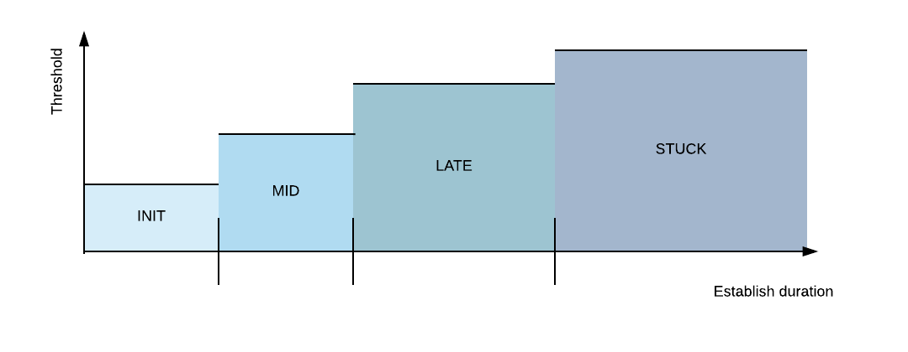

The diagram above is an overview of the consensus process from the perspective of a single participant. Recall that during a single consensus round, a node is trying to agree with its peers on which transactions to apply to its prior ledger when generating the next ledger. It also attempts to agree on the network time when the ledger closed (see section below for details). There are 3 main phases to a consensus round:
startRound places the node in the Open
phase. In this phase, the node is waiting for transactions to include
in its open ledger.
Close=s the open ledger and transitions
to the =Establish phase. In this phase, the node shares/receives
peer proposals on which transactions should be accepted in the closed
ledger.
Accept
phase. In this phase, the node works on applying the transactions to
the prior ledger to generate a new closed ledger. Once the new ledger
is completed, the node shares the validated ledger hash with the network
and makes a call to startRound to start the cycle
again for the next ledger.
Throughout, a heartbeat timer calls timerEntry at a regular
frequency to drive the process forward. Although the startRound
call occurs at arbitrary times based on when the initial round began and
the time it takes to apply transactions, the transitions from Open
to Establish and Establish to Accept
only occur during calls to timerEntry. Similarly, transactions
can arrive at arbitrary times, independent of the heartbeat timer. Transactions
received after the Open to Close transition
won't be considered until the next consensus round, represented above by
the light green triangles.
Peer proposals are issued by a node during a timerEntry
call, but since peers do not synchronize timerEntry calls,
they are received by other peers at arbitrary times. Peer proposals are only
considered if received prior to the Establish to Accept
transition, and only if the peer is working on the same prior ledger. Peer
proposals received after consensus is reached will not be meaningful and
are represented above by the circle with the X in it. Only proposals from
chosen peers are considered.
Note that most types have an ID as a lightweight identifier of instances of that type. Consensus often operates on the IDs directly since the underlying type is potentially expensive to share over the network. For example, proposal's only contain the ID of the position of a peer. Since many peers likely have the same position, this reduces the need to send the full transaction set multiple times. Instead, a node can request the transaction set from the network if necessary.
In addition to agreeing on a transaction set, each consensus round tries to agree on the time the ledger closed. Each node calculates its own close time when it closes the open ledger. This exact close time is rounded to the nearest multiple of the current effective close time resolution. It is this effective close time that nodes seek to agree on. This allows servers to derive a common time for a ledger without the need for perfectly synchronized clocks. As depicted below, the 3 pink arrows represent exact close times from 3 consensus nodes that round to the same effective close time given the current resolution. The purple arrow represents a peer whose estimate rounds to a different effective close time given the current resolution.

The effective close time is part of the node's position and is shared with peers in its proposals. Just like the position on the consensus transaction set, a node will update its close time position in response to its peers' effective close time positions. Peers can agree to disagree on the close time, in which case the effective close time is taken as 1 second past the prior close.
The close time resolution is itself dynamic, decreasing (coarser) resolution in subsequent consensus rounds if nodes are unable to reach consensus on an effective close time and increasing (finer) resolution if nodes consistently reach close time consensus.
Internally, a node operates under one of the following consensus modes. Either of the first two modes may be chosen when a consensus round starts.
The other two modes are set internally during the consensus round when the
node believes it is no longer working on the dominant ledger chain based
on peer validations. It checks this on every call to timerEntry.

Once either of wrong ledge or switch ledger are reached, the node cannot return to proposing or observing until the next consensus round. However, the node could change its view of the correct prior ledger, so going from switch ledger to wrong ledger and back again is possible.
The distinction between the wrong and switched ledger modes arises because a ledger's unique identifier may be known by a node before the ledger itself. This reflects that fact that the data corresponding to a ledger may be large and take time to share over the network, whereas the smaller ID could be shared in a peer validation much more quickly. Distinguishing the two states allows the node to decide how best to generate the next ledger once it declares consensus.
As depicted in the overview diagram, consensus is best viewed as a progression through 3 phases. There are 4 public methods of the generic consensus algorithm that determine this progression
startRound begins a consensus round.
timerEntry is called at a regular frequency (LEDGER_MIN_CLOSE)
and is the only call to consensus that can change phases (aside from
startRound).
peerProposal is called whenever a peer proposal is
received and is what allows a node to update its position in a subsequent
timerEntry call.
gotTxSet is called when a transaction set is received
from the network. This is typically in response to a prior request from
the node to acquire the transaction set corresponding to a disagreeing
peer's position.
The following subsections describe each consensus phase in more detail and what actions are taken in response to these calls.
The accept phase is the terminal phase of the consensus algorithm. Calls
to timerEntry, peerProposal and gotTxSet
will not change the internal consensus state. A call to startRound
will kick off the next consensus round. It provides the new prior ledger,
prior ledger ID and whether the round should begin in the proposing or observing
mode. After setting some initial state, the phase transitions to Open.
The node will check if the provided prior ledger and ID are correct, updating
the mode and requesting the proper ledger from the network if necessary.
The Open phase is a quiescent period to allow transactions
to build up in the node's open ledger. The duration is a trade-off between
latency and throughput. A shorter window reduces the latency to generating
the next ledger, but also reduces transaction throughput due to fewer transactions
accepted into the ledger.
A call to startRound would forcibly begin the next consensus
round, skipping completion of the current round. This is not expected during
normal operation. Calls to peerProposal or gotTxSet
simply store the proposal or transaction set for use in the coming Establish
phase.
A call to timerEntry first checks that the node is working
on the correct prior ledger. If not, it will update the mode and request
the correct ledger. Otherwise, the node checks whether to switch to the
Establish phase. Under normal circumstances, this occurs
LEDGER_MIN_CLOSE
have elapsed OR
The longer idle interval increases the opportunity to get some transaction into the next ledger and avoids doing useless work closing an empty ledger.
Additionally, the node closes if more than half the number of prior round peers have already closed or finished this round, as this indicates the node is falling behind and needs to catch up.
When closing the ledger, the node takes its initial position based on the transactions in the open ledger at that time. It also uses the current time as its initial close time estimate. If in the proposing mode, the node shares its initial position with peers. Now that the node has taken a position, it will consider any peer positions for this round that arrived earlier. The node generates disputed transactions for each transaction not in common with a peer's position. The node also records the vote of each peer for each disputed transaction. In the example below, transactions 2,3 and 4 are in dispute.

The establish phase is the active period of consensus in which the node exchanges proposals with peers in an attempt to reach agreement on the consensus transactions and effective close time.
A call to startRound would forcibly begin the next consensus
round, skipping completion of the current round. This is not expected during
normal operation. Calls to peerProposal or gotTxSet
that reflect new positions will generate disputed transactions for any new
disagreements and will update the peer's vote for all disputed transactions.
A call to timerEntry first checks that the node is working
from the correct prior ledger. If not, the node will update the mode and
request the correct ledger. Otherwise, the node updates the node's position
and considers whether to switch to the Accepted phase
and declare consensus reached. However, at least LEDGER_MIN_CONSENSUS
time must have elapsed before doing either. This allows peer's an opportunity
to take an initial position and share it.
Update Position
In order to achieve consensus, the node is looking for a transaction set that is supported by a super-majority of peers. The node works towards this set by adding or removing disputed transactions from its position based on an increasing threshold for inclusion.

By starting with a lower threshold, a node initially allows a wide set of
transactions into its position. If the establish round continues and the
node is "stuck", a higher threshold can focus on accepting transactions
with the most support. The constants that define the thresholds and durations
at which the thresholds change are given by AV_XXX_CONSENSUS_PCT
and AV_XXX_CONSENSUS_TIME
respectively, where XXX is INIT,MID,LATE
and STUCK. The effective close time position is updated
using the same thresholds.
Given the example disputes above and an initial threshold of 50%, our node would retain its position since transaction 1 was not in dispute and transactions 2 and 3 have 75% support. Since its position did not change, it would not need to send a new proposal to peers. Peer C would not change either. Peer A would add transaction 3 to its position and Peer B would remove transaction 4 from its position; both would then send an updated position.
Conversely, if the diagram reflected a later call to timerEntry
that occurs in the stuck region with a threshold of say 95%, our node would
remove transactions 2 and 3 from its candidate set and send an updated position.
Likewise, all the other peers would end up with only transaction 1 in their
position.
Lastly, if our node were not in the proposing mode, it would not include its own vote and just take the majority (>50%) position of its peers. In this example, our node would maintain its position of transactions 1, 2 and 3.
Checking Consensus
After updating its position, the node checks for supermajority agreement with its peers on its current position. This agreement is of the exact transaction set, not just the support of individual transactions. That is, if our position is a subset of a peer's position, that counts as a disagreement. Also recall that effective close time agreement allows a supermajority of participants agreeing to disagree.
Consensus is declared when the following 3 clauses are true:
LEDGER_MIN_CONSENSUS
time has elapsed in the establish phase
LEDGER_MIN_CONSENSUS
longer than the last round's establish phase
minimumConsensusPercentage of ourself and our peers
share the same position
The middle condition ensures slower peers have a chance to share positions,
but prevents waiting too long on peers that have disconnected. Additionally,
a node can declare that consensus has moved on if minimumConsensusPercentage
peers have sent validations and moved on to the next ledger. This outcome
indicates the node has fallen behind its peers and needs to catch up.
If a node is not proposing, it does not include its own position when calculating the percent of agreeing participants but otherwise follows the above logic.
Accepting Consensus
Once consensus is reached (or moved on), the node switches to the Accept
phase and signals to the implementing code that the round is complete. That
code is responsible for using the consensus transaction set to generate the
next ledger and calling startRound to begin the next round.
The implementation has total freedom on ordering transactions, deciding what
to do if consensus moved on, determining whether to retry or abandon local
transactions that did not make the consensus set and updating any internal
state based on the consensus progress.